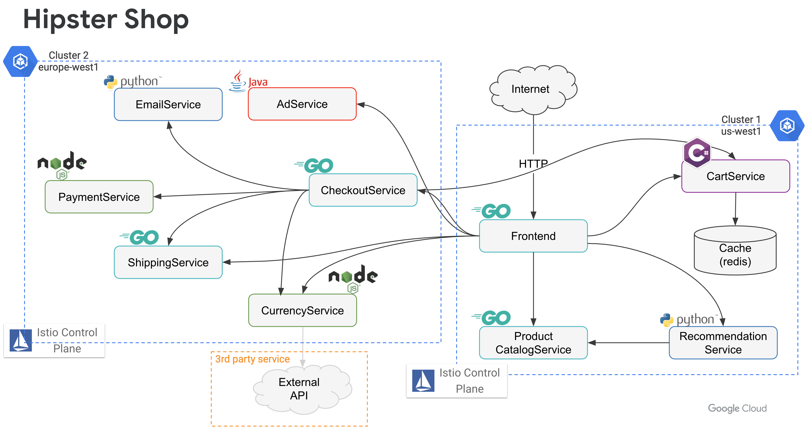

Welcome to the Anthos Service Mesh labs!
Over the course of these labs, you will learn & explore how Anthos Service Mesh (ASM) can help support modern cloud application deployments through the following tasks.
1 | |
2 | |
3 | |
4 | |
5 | |
6 | |
7 | |
8 | |
9 |
You will be using the online boutique demo application for most of the labs. Our final deployment architecture will be as follows.

NOTE: As of Aug 2020, these labs use Anthos Service Mesh (ASM) 1.6.4-asm.9.
To complete these labs an Anthos entitled service account is required, if you wish to execute these labs in your environments. Your hosts can provide instructions on how to get access to an entitled account. You can self-provision an entitled account by launching the Anthos sample deployment in your environment.
You can find a summary of how to explore Anthos in your environment here.
There are various options to set-up your environment to work through the labs.
You can find a summary of how to prepare your environment here.
Congratulations! Now you're ready to deploy an application onto your simulated global cloud environment.
If you return to these labs later, your laptop goes to sleep, or your Cloud Shell is spontaneously disconnected, run the following commands:
export PROJECT_ID=<your-project-id>
gcloud config set project $PROJECT_ID
cd $HOME
These labs are new for Q2 ‘20, and you may hit a roadblock or a bug. If this happens, email the labs Google Group - hybrid-sme-labs-2020@google.com, and a lab owner will be in touch to help.